FOUNDERFollower of Jesus ChristFounder of GodHealth
FREE 6-MINUTE KINGDOM VITALITY SCAN
Find what is draining your energy—and get your personal 7-day roadmap.
SHOW ME WHAT IS HOLDING ME BACKTHE MISSION OF GODHEALTH
GodHealth helps the Body of Christ return to God’s original design: healthy, vital and ready to serve.
Biblical wisdom. Modern health science. Practical action.
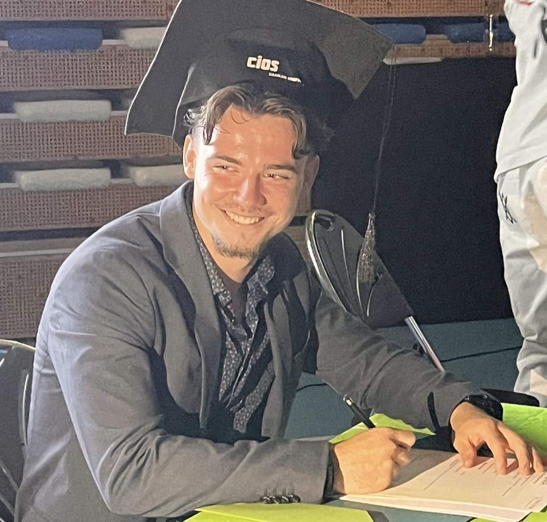
REAL PEOPLE · REAL PROGRESS
Real experiences. Real progress.
Read all four complete stories ↓THE HIDDEN COST
You wake up without feeling restored.
Stress keeps breaking your rhythm.
Low energy limits how fully you can serve.
THE GODHEALTH DIFFERENCE

Energy, sleep, food rhythms, movement, and recovery.
BUILD CAPACITY
Stress, habits, thoughts, emotions, and self-leadership.
RESTORE ORDER
Faith, identity, purpose, surrender, and consistency with God.
ALIGN YOUR LIFEFROM MISALIGNMENT TO WHOLENESS
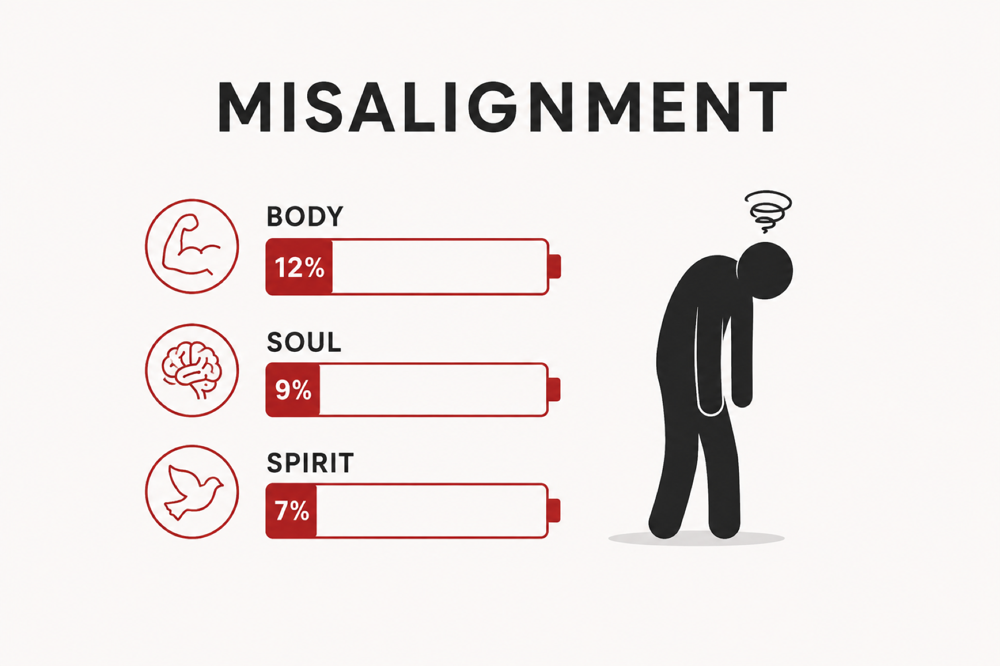
Poor sleep. More cravings. Less focus.
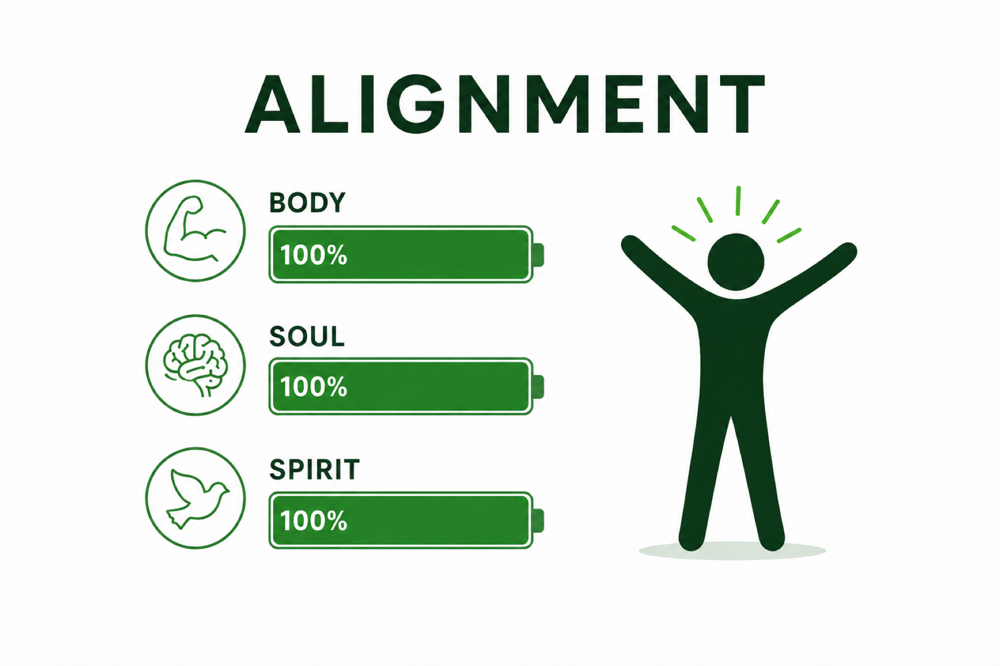
More energy. Clearer choices. Stronger stewardship.
THE ART OF STEWARDSHIP
“What becomes possible when your energy finally matches your calling?”
More presence. Clearer focus. Greater capacity to serve.
THE GODHEALTH STANDARDHIGH CLARITY · LOW FRICTION
No complicated protocol. Just clarity.
THE EVIDENCE · IN THEIR OWN WORDS
Four complete client stories.
 01 · CLIENT STORY
01 · CLIENT STORYLife-changing experience!
I completed the 3-month program, and it has truly been a life-changing experience. One of the biggest things I learned is that I can function really well while eating much less than I used to. I also noticed that the afternoon energy crashes I used to struggle with completely disappeared after just a few weeks. This program isn’t just about food, it’s about creating a healthy lifestyle that lasts. If you’re ready to make real changes in the way you eat, move, and grow in your faith, I wholeheartedly encourage you to join. You won’t regret it. One of the most valuable parts of the journey was becoming aware of how nutrition affects your body and learning how to build healthy habits step by step. The knowledge, encouragement, and guidance you receive through GodHealth are truly a blessing and can make a lasting difference in your life.
 02 · CLIENT STORY
02 · CLIENT STORYTop results and a healthy lifestyle!
Since I started at GodHealth, I can see really clear physical progress. My body fat percentage has dropped significantly, and I’m seeing noticeable muscle definition. On top of that, my nutrition has improved tremendously; I finally have a stable, better eating pattern with the right nutrients. Highly recommended if you want to achieve serious results!
 03 · CLIENT STORY
03 · CLIENT STORYMore energy and better relationship with God!
One of the things GodHealth made me realise is how my physical and spiritual life work together, Ive learned so much about nutrition and the benefits of eating God created food. Im in better shape, I feel more energy and what surprised me the most is that my relationship with God actually became stronger! I recommend everyone to be a part of GodHealth it will open up your eyes in many ways in how God intended us to take care of our bodies, so that we live a healthy and Godly life!
 04 · CLIENT STORY
04 · CLIENT STORYGreat experience!
Since I started at GodHealth, I have made a lot of progress, both physically and in my lifestyle. I feel fitter, more energetic, and have learned a lot about healthy nutrition as God intended. I have also been able to gain a much deeper insight into the connection between mind and body. I can definitely recommend GodHealth to anyone who wants to live healthier and grow, both physically and spiritually.
Individual experiences vary. GodHealth provides educational wellness guidance and does not replace medical care.
FAITH FIRST · EXCELLENCE IN PRACTICE
Faith-led coaching. Elite-sport discipline. Practical health guidance.
Robin Kramps is a follower of Jesus Christ, Certified Lifestyle Coach Level 4 and Dutch national hurdles silver medalist. He founded GodHealth to help believers build the strength and energy their calling requires.
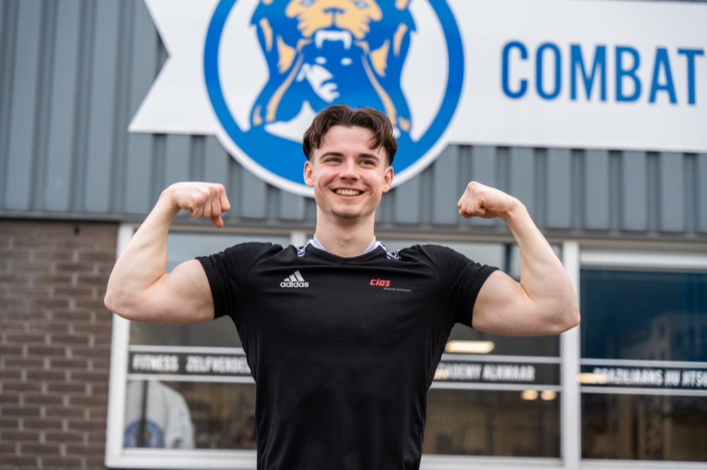
ONE CLEAR ASCENSION PATH
Find your biggest bottleneck.
Start the free scanFollow the guides, plans and recipes.
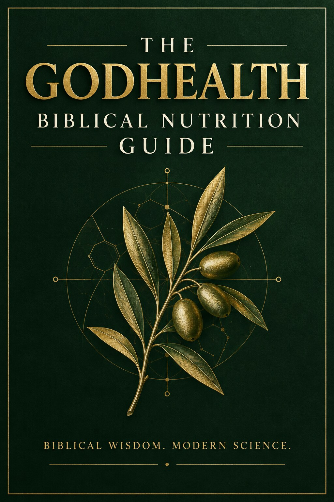
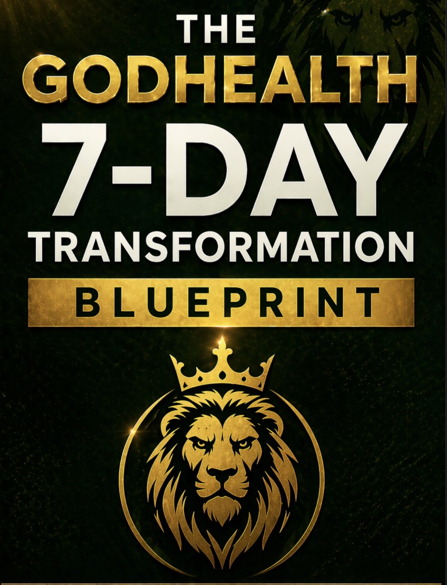
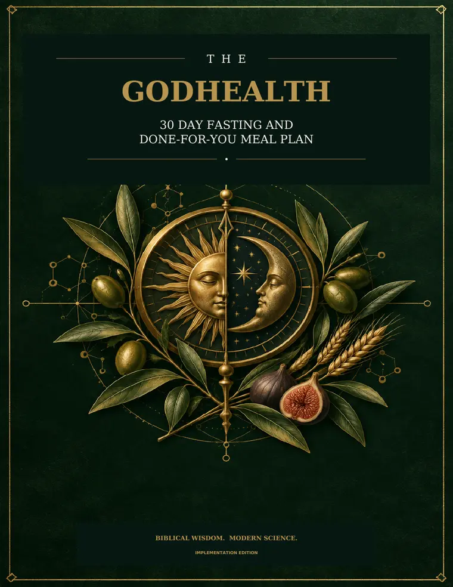
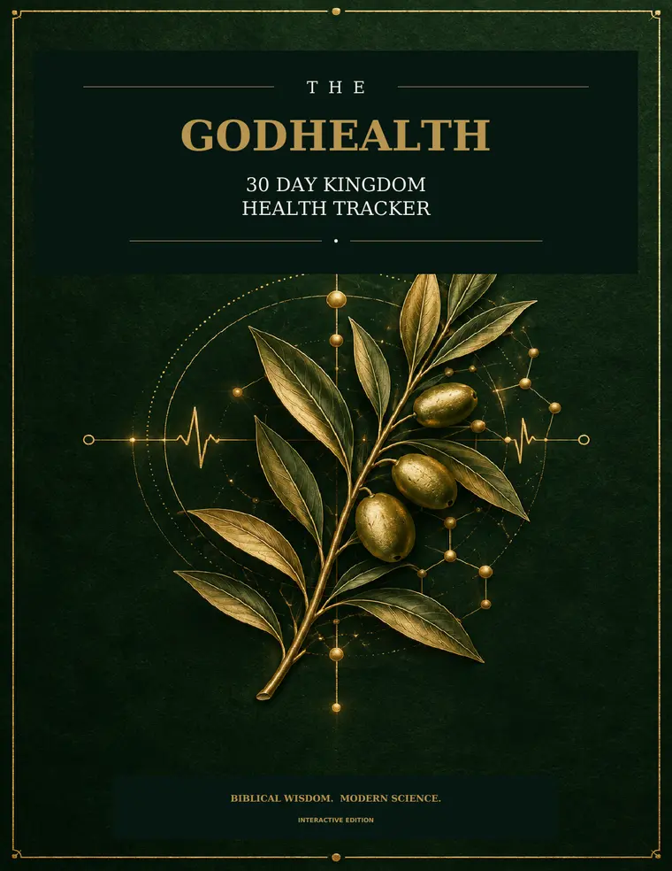
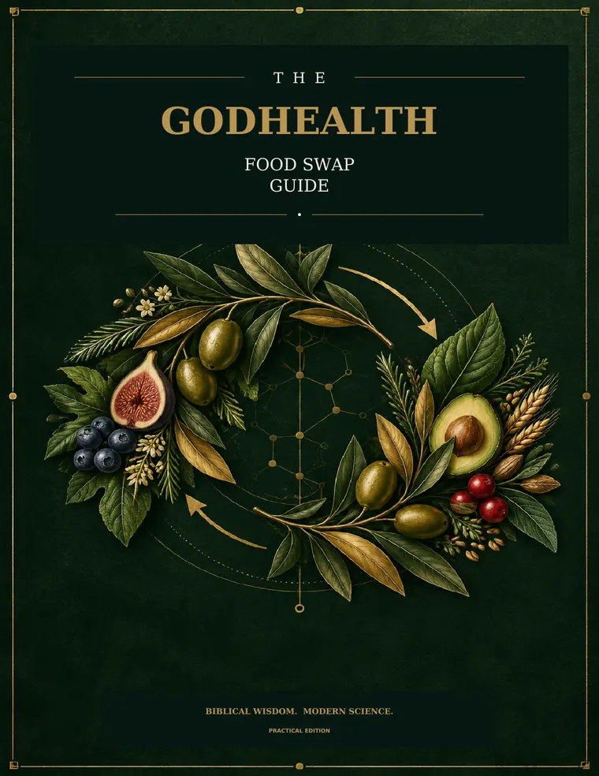
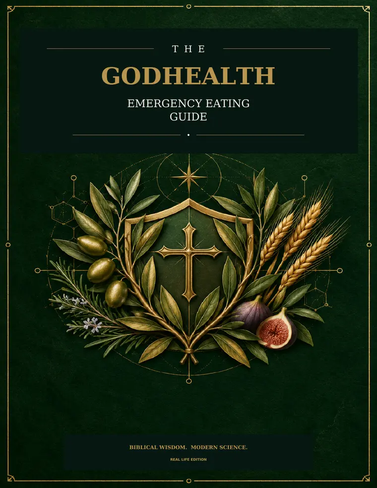
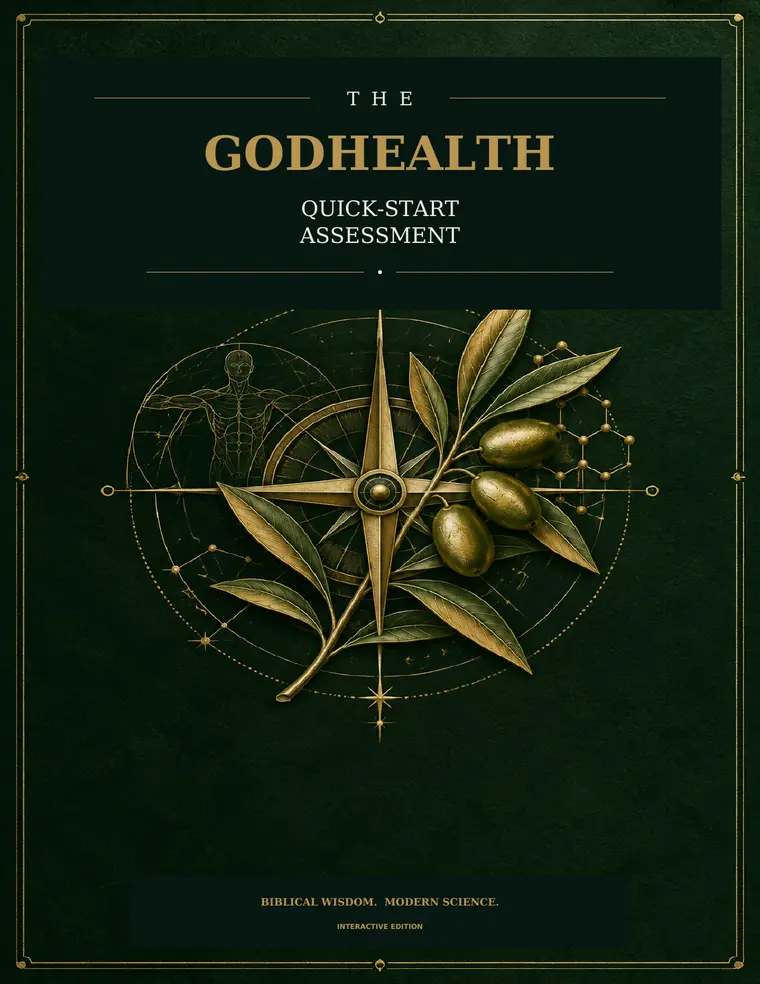
Get a personal plan and accountability.
BEFORE YOU BEGIN
Yes. It takes about six minutes and gives you a clear starting point without requiring a purchase.
No. The scan is an educational self-assessment for general wellness and spiritual reflection. It does not diagnose or treat a medical condition.
No. The purpose is the opposite: identify the area that matters most and focus on a small, practical first step.
No. Weight may be part of your goal, but GodHealth focuses on energy, habits, sleep, stress, stewardship, and the capacity to live your calling.
You will understand your current Body, Soul, and Spirit balance, the area creating the most friction, and the first practical steps to focus on during the next seven days.
No. The scan is a complete free starting point. The GodHealth Bundle and private coaching are optional next steps if you want more structure or personal support.
YOUR CALLING DESERVES A STRONGER FOUNDATION
Your score, bottleneck and 7-day roadmap—in six minutes.
SHOW ME MY NEXT STEP Free · 6 minutes · No purchase required